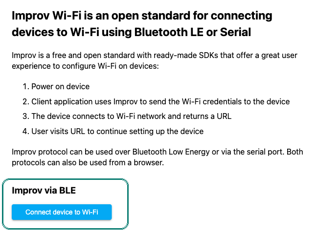
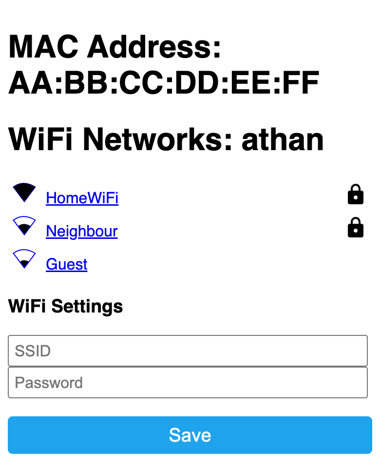

Set up your clock
About five minutes, from a phone or a computer. You need the clock, a USB-C charger and the password of your Wi-Fi.
2.4 GHz Wi-Fi only. The clock can't join a 5 GHz network. If your router shows two networks (for example "home" and "home-5G"), pick the one without "5G". A router that uses one name for both bands works too.
-
Plug it in
Use a USB-C phone charger, 5 V and 2 A. Never more than 5 V.
A new clock opens on its Wi-Fi setup screen, like the one beside these steps: Bluetooth at the top, the clock's own hotspot below. Both are ready at once, so use whichever suits your phone.
-
Connect it to your Wi-Fi
Over Bluetooth, the easiest way. It needs Chrome or Edge: Safari and Firefox can't use Bluetooth from a web page.
Open improv-wifi.com. Under Improv via BLE, press Connect device to Wi-Fi and pick athan from the list.

The screen asks Press Select, in orange. Push the joystick straight in. This proves you are standing next to the clock; the permission lasts one minute.
Try it on the clock beside these steps: press the round button in the middle of the joystick.
Choose your network on the page and type its password. The clock joins, and Bluetooth turns off.
Through the clock's own Wi-Fi hotspot. This works with every phone, iPhones included, and with any computer.
In your phone's Wi-Fi settings, join AthanFallbackHotspot. The password is athan404 (the clock's screen shows both).
The setup page opens by itself. If it doesn't, open http://192.168.4.1 in Safari.

The networks shown are examples: yours shows the ones around your home.
Tap your network (or type its name under SSID), type the password and press Save. The clock restarts and joins your Wi-Fi. Your phone goes back to its own Wi-Fi by itself.
If you use Home Assistant, its Companion app finds a new clock over Bluetooth by itself and offers to set it up. When the clock's screen shows Press Select, push the joystick in.
Once the clock is on your Wi-Fi, Home Assistant's ESPHome integration finds it too, with the same controls as the clock's web page. When it asks for the encryption key, use:
/A5YakHWYfXLiBWI5Z92v0FWiaMsWbCUCWD41zlLPYk=
-
Choose your mosque
A new clock starts with the Islamic Center of Davis. Choose yours by name in the clock's menu (Select, then Down to Location, Left or Right to your mosque, Select) or on the clock's web page under Location. The clock then downloads that mosque's prayer times for the year.
Not in the list? Ask for your mosque: once it is added here, it shows up on every clock by itself.
-
Let it download
The first time, the clock downloads the year's prayer times, then its sounds. That takes a few minutes. Until an athan is stored, an athan time is marked with three short tones instead.
From then on it runs by itself and keeps its Wi-Fi and settings through power cuts. For the athan it needs the internet only to set its time after a power cut.
Your clock is set up
Here is what to look at next.
The screen and the menu
What the marks mean, what each key does, and every row of the menu.
languageThe web page
Open athan.local on your phone: everything the menu has, in one place.
headphonesChoose the athan
Listen to every reciter in the library, and pick one for each prayer.
eventYour mosque's times
The whole year at a glance, as your clock has them.
If something goes wrong
My phone doesn't find "athan" over Bluetooth
Use Chrome or Edge on Android or a computer, and allow Bluetooth when the browser asks. Safari (iPhone, Mac) can't do it: use the hotspot instead.
Bluetooth runs while the clock is in setup. If the clock already knows a network that has just gone away, Bluetooth starts after 15 seconds and the hotspot after about 3 minutes, so a short router restart never opens them.
"Press Select" went away before I pressed it
The permission lasts one minute. Press Connect on improv-wifi.com again, then Select on the clock.
My network isn't in the list
The clock only sees 2.4 GHz networks. Pick the one without "5G" in its name, or type the name under SSID on the hotspot's page. A network that is 5 GHz only can't be used.
I moved the clock to another home, or changed the Wi-Fi password
When it can't find the network it knows, the clock opens setup again by itself. To make it forget its network on purpose: unplug it, hold Select, and plug it back in. The LED blinks three times, the clock restarts, and setup starts again.
athan.local doesn't open on my phone
Some phones, Android in particular, can't open .local addresses. Use the clock's IP address
instead: it is on the menu's Info row.
The full guide: Using the clock, section 1.